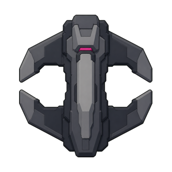
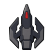
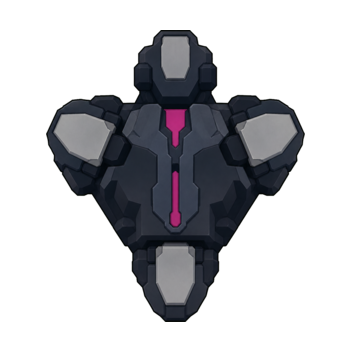
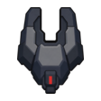
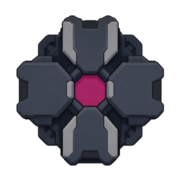
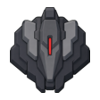
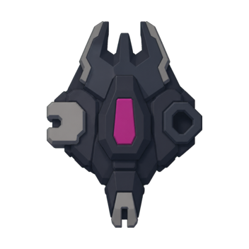
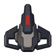

2 / 3
전체 런에서 실질적으로 보이는 경험치 회수 아이템 / 중립시설
스테이지별 배치 데이터는 존재하지만 현재 전장은 시작할 때 한 번만 채운다.
CARDBORNE · CURRENT CODE AUDIT + LOCKED PLAN
현재 master의 실제 수치와 12보스 확장 계획을 한 문서에 정리했다. “현재”와 “계획”은 섞지 않았으며, 일반 적 수치는 런타임과 같은 배율식으로 계산한다.
문제는 단순 드롭 운이 아니라 지속 전장 전환 뒤 공급·방어·성장 규칙이 이전 구조와 어긋난 데서 생겼다.
스테이지별 배치 데이터는 존재하지만 현재 전장은 시작할 때 한 번만 채운다.
방향을 따라오는 전방 방어막이고 해제 분기가 사실상 도달하지 않아 공략이 오래 때리기로 수렴한다.
피해, 개수, 쿨다운이 같은 단계에서 함께 좋아지는 것이 원인이다.
회수 아이템만 시간 기반으로 제한 보충한다. 보스 사망과는 연결하지 않는다.
3개의 틈과 2초 완전 해제 시간을 노리는 것이 명확한 정답이 된다.
기존 적을 지우거나 맵을 바꾸지 않고, 보스 사망 뒤 새로 생성되는 일반 적 구성만 바뀐다.
현재 생성기는 스테이지마다 회수 아이템 2개와 시설 3개를 만들지만, 지속 전장에서는 첫 배치만 실제 월드에 들어간다.
| 항목 | 현재 | 계획 | 규칙 |
|---|---|---|---|
| 시작 경험치 회수 아이템 | 2 | 4 | 서로 떨어진 기존 배치 후보 사용 |
| 회수 아이템 보충 | 없음 | 90초 | 활성 수가 2개 미만일 때 1개, 최대 4개. 플레이 중에만 시간 진행 |
| 시작 중립시설 | 3 | 6 | 회복·취약·둔화·용암 역할을 결정론적으로 배분 |
| 시설 보충 | 없음 | 없음 | 보스 사망이나 스테이지 전환으로 다시 만들지 않음 |
스케치는 자산이 아니라 동작 참고다. 실제 방어막은 충돌 구간과 같은 코드 기반 3분할 호로 표시한다.
방어 구간 3개와 40° 틈 3개가 번갈아 배치된다.
보스가 플레이어를 바라보는 방향과 별개로 천천히 회전한다.
8초 분할 방어 뒤 2초 동안 모든 방어막이 사라진다.
85%를 막는다. 막힌 피해는 기존 반격 충전 규칙에 계속 들어간다.
방어막이 켜져 있어도 틈으로 들어간 공격은 전부 적용된다.
2초 동안 모든 방향에서 전부 적용된다.
피해 범위는 해당 보스가 실제로 선택하는 직접·자동 패턴의 최소/최대 1회 피해다. 계획 체력은 현재 체력에 정확히 30%를 더한 값이다.
각 표는 해당 단계의 일반 출현 목록과 보스 페이즈 소환 목록을 합친 것이다. HP·이동속도·피해는 현재 Hard 런의 실효값이다. 엘리트 변형과 시설 효과는 제외했다.
현재 레벨별 실제 효과와 계획 최대 레벨을 카테고리별로 표시한다. 피해·방어 곡선은 현재 L1과 현재 최대 출력을 끝점으로 보존하면서 중간 단계를 늘린다. 피해가 없는 발동무기는 아래 표의 확정 7레벨 CC 확장 곡선을 사용한다.
전체 공격 경로를 미리 그리지 않는다. 보스 본체·모듈 충전, 음향, 공격이 들어오는 지점의 짧은 신호로 공격 종류를 알리고, 실제 위험물은 발동 뒤에만 보인다.
| 단계 | 보스 | 핵심 패턴과 대응 | 신규 일반 적 | 계획 보스 HP |
|---|---|---|---|---|
| 9 | 위상 절단기Phase Cutter | 양쪽 가장자리에서 절단 막대가 시차 진입한다. 가장자리 점멸만 보여주고 경로선은 표시하지 않는다. 발동한 막대 사이의 이동 틈을 따라간다. | 위상 척후기 HP 76 · 속도 188 · 11피해 3연사 | 74,360 |
| 10 | 중력 닻Gravity Anchor | 본체 모듈 3개가 순서대로 켜지고 제한된 당김 파동을 낸다. 켜진 모듈이 파동 시작점이며, 발동 전 최종 범위는 그리지 않는다. | 닻 드론 HP 92 · 속도 154 · 반경 180 당김 후 18피해 | 79,430 |
| 11 | 공명 반응로Resonance Reactor | 코어 상태가 근거리/원거리 파동을 교대한다. 색과 코어 개방 상태로 다음 종류를 구별하고 완성된 링 경로는 미리 그리지 않는다. | 펄스 수호기 HP 108 · 속도 168 · 근/원거리 18피해 | 84,500 |
| 12 | 지휘 코어Command Core | 본체 모듈 3개가 가장자리 진입, 파동, 집중 포격을 고정 3박자로 조합한다. 활성 모듈만 공격 종류를 알린다. | 지휘 중계기 HP 98 · 속도 150 · 반경 320 아군 피해 +10%, 회복시간 -15% | 91,260 |








이미지 상태: canonical 스타일 시트를 실제 참조 이미지로 넣어 ImageGen으로 만든 1차 후보다. 투명 배경과 실제 캔버스 크기만 기계적으로 정리했다. 아직 승인 전이며 production manifest와 런타임에는 연결하지 않았다. 정확한 파일 해시는 후보 manifest에 기록했다.
scripts/vehicle/stages/vehicle_combat_stages.gd, scripts/enemies/vehicle_stage_difficulty.gd, scripts/bosses/vehicle_boss_patterns.gd.scripts/enemies/vehicle_enemy_archetypes.gd, scripts/combat/vehicle_attack_contract.gd, scripts/progression/vehicle_guidebook_stat_adapter.gd.data/cards/vehicle/, data/weapons/vehicle/, 업그레이드 정본.96ccf5d053e66dd3a102ccdf39daefd0b0c54b0e88d20428b7ba1c894f002889로 검증했다.이 문서는 현재 구현 스냅샷과 승인 전 계획을 함께 보여주는 의사결정 보고서다. 계획 수치는 구현 전까지 gameplay 정본이 아니며, 활성 ExecPlan이 실행 순서와 승인 경계를 소유한다.